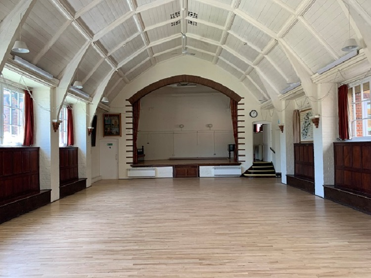
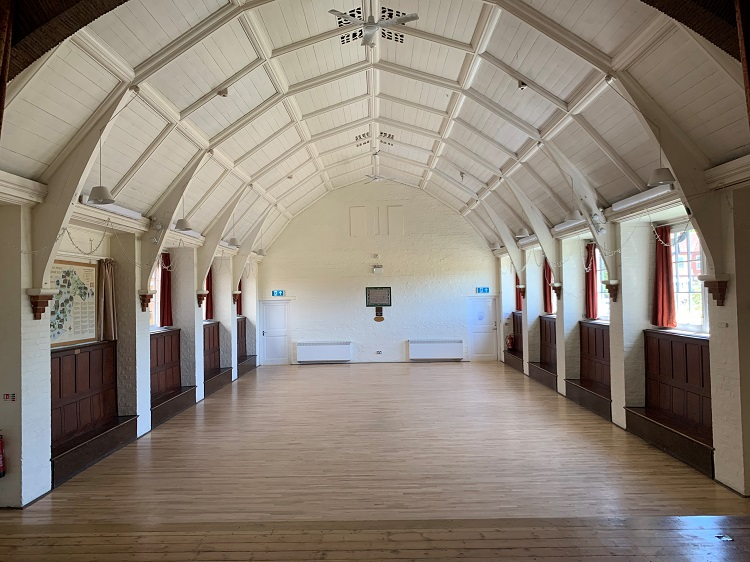
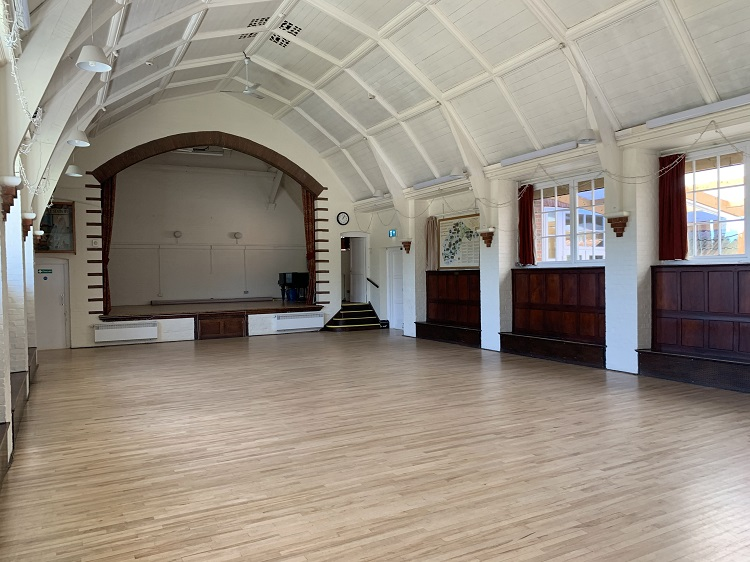
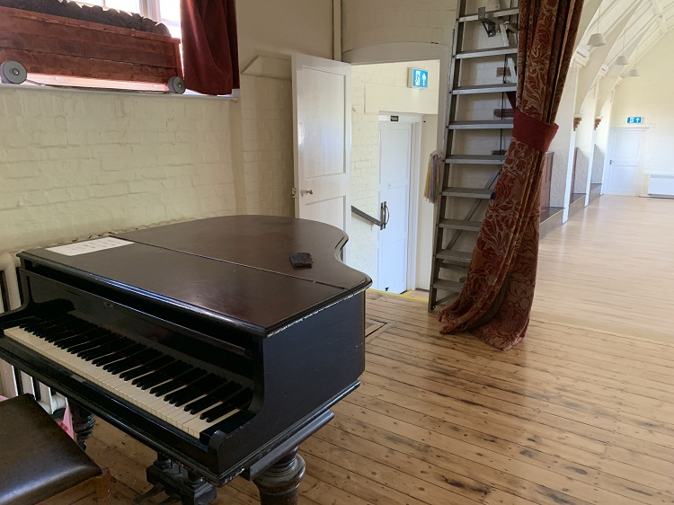
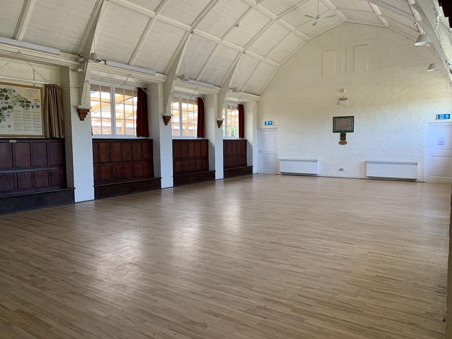

The Walker Room, previously known as the Main Hall consists of a large 128.27 sqm open area as well as a Stage which
is 38.47 sqm. Sir James Walker of Worplesdon Place who gave the land for the Memorial hall to be built on. He bought
Worplesdon Place in about 1905 and lived their until he died in 1927. He was born in India in 1845. During his
career he established the Alliance Bank of Simla. He was also a newspaper proprietor of two Indian periodicals. He
was friend of Rudyard Kipling, who lived with Sir James and his first wife in India as a child. Sir James was
Kiplings first patron and Rudyard Kipling even visited them at Worplesdon Place in 1911. Obviously Sir James spent
lot of his life in India. Huge picture on wall is of Sir James Walker in main hall.